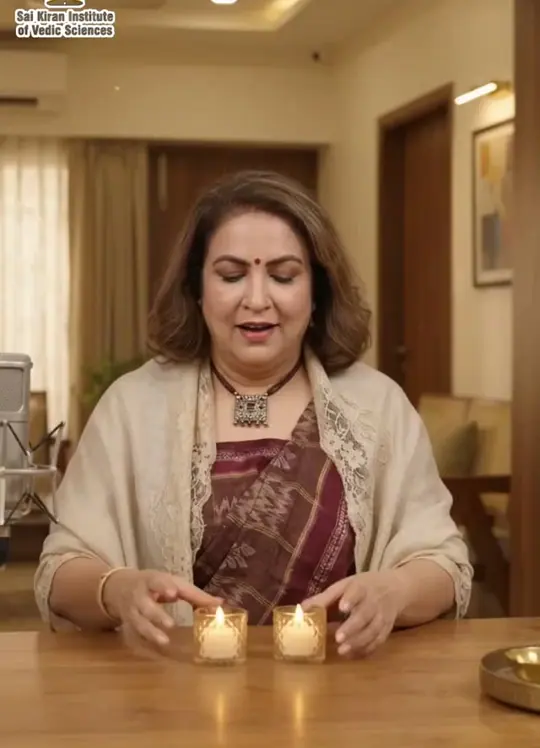

Insights for the mind & spirit
Articles from Dr. Shalini Mehta’s blogs, her books, and daily reels — on mental wellness, festivals, Vastu, astrology and numerology.
Latest from the blogs
Diwali Without the Stress: 5 Mind-Calming Practices for a Joyful Festival
Diwali is the festival of lights, but for many of us it is also the festival of to-do lists. There is cleaning, shopping, cooking, gifting, hosting, and meeting...
Read articleWinning the Mind: What PV Sindhu Teaches Us About Handling Pressure
Two Olympic medals. A world championship. Yet PV Sindhu has been honest that the toughest match isn't always on the court. It's the one...
Read articleFrom Silence to Ambassador: What Deepika Padukone's New Role Teaches Us About Mental Health
For years, mental health in India was spoken about in whispers, if at all. So when the Union Health Ministry made Deepika Padukone its first-ever Mental Health...
Read articleThis World Mental Health Day, Listen to the Child Within
Every October, the world pauses to talk about mental health. This year, instead of only asking "How are you coping?", try a deeper question: "Who within me is s...
Read articleDoomscrolling Is Rewiring Your Mind. Here's How to Take It Back
It's 11:40 pm. You only meant to check one message, but forty minutes later you're deep in bad news, comparison posts and opinions you never asked for. Your bod...
Read articleDiwali Vastu Shastra: 7 Easy Remedies for Home Prosperity
Diwali Par Vastu Shastra Ke 7 Aasaan Upay: Ghar Mein Laayen Sukh, Shanti Aur Sam...…
Read articleDiwali 2026: Lakshmi Pujan, Astrology & Wealth Remedies
Diwali 2026: Lakshmi Pujan Ka Jyotishiya Mahatva Aur Dhan-Samriddhi Ke Aasaan Up...…
Read articleDussehra 2026: Vijayadashami Significance & Astrology Remedies
नवरात्रि के नौ दिनों की साधना के बाद आता है विजयादशमी, यानी दशहरा। वर्ष 2026 में यह पर्व 20 अक्टूबर, मंगलवार को मनाया जाएगा। यह दिन असत्य पर सत्य और अधर्म पर धर्म की जीत का प्र…
Read articleDurga Ashtami & Maha Navami 2026: Tithi, Kanya Pujan & Upay
शारदीय नवरात्रि 2026 का आरंभ 11 अक्टूबर से हो चुका है। अब इसका सबसे शक्तिशाली चरण आने वाला है, यानी महा अष्टमी और महा नवमी। इस वर्ष ये दोनों तिथियाँ 18–19 अक्टूबर के आसपास हैं। तिथ…
Read articleNavratri Vastu & Meditation: 9-Day Positive Energy Plan
त्योहारों के दिनों में लोग घर की सफाई और सजावट पर विशेष ध्यान देते हैं। वास्तु शास्त्र के अनुसार घर की ऊर्जा का सीधा असर हमारे मन, स्वास्थ्य और संबंधों पर पड़ता है। नवरात्रि में यद…
Read articleNavratri 2026: Rashi-Wise Durga Puja and Astrology Remedies
शारदीय नवरात्रि शक्ति, साधना और आत्म-शुद्धि का सबसे शुभ समय माना जाता है। इस वर्ष यह पर्व 11 अक्टूबर से 19 अक्टूबर तक चलेगा और 20 अक्टूबर को विजयादशमी मनाई जाएगी। वैदिक ज्योतिष के …
Read articleWatch & learn
Short lessons on NLP, hypnotherapy, graphotherapy, numerology and astrology.

🔢 Ever wondered why the number 2 keeps appearing in your life?Read deeper
Learn, heal & grow — for free
Join the community
Get updates on workshops, festivals and new articles on WhatsApp.